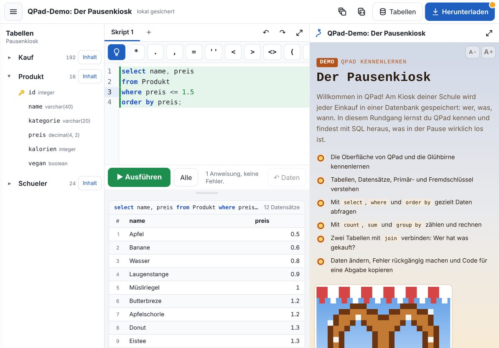
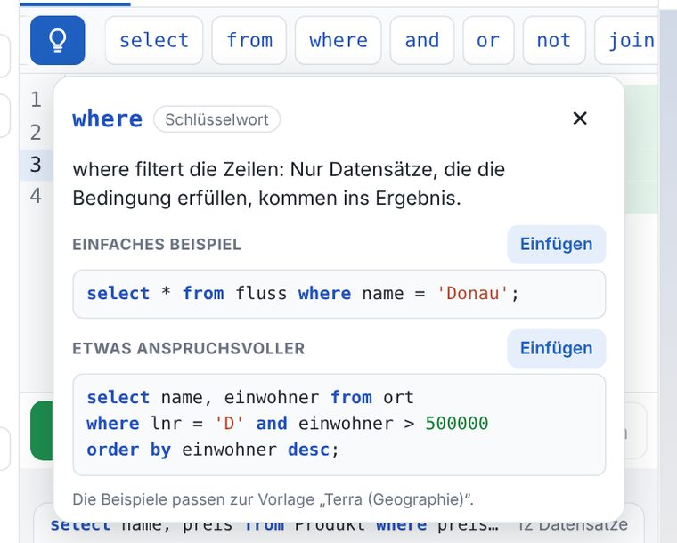
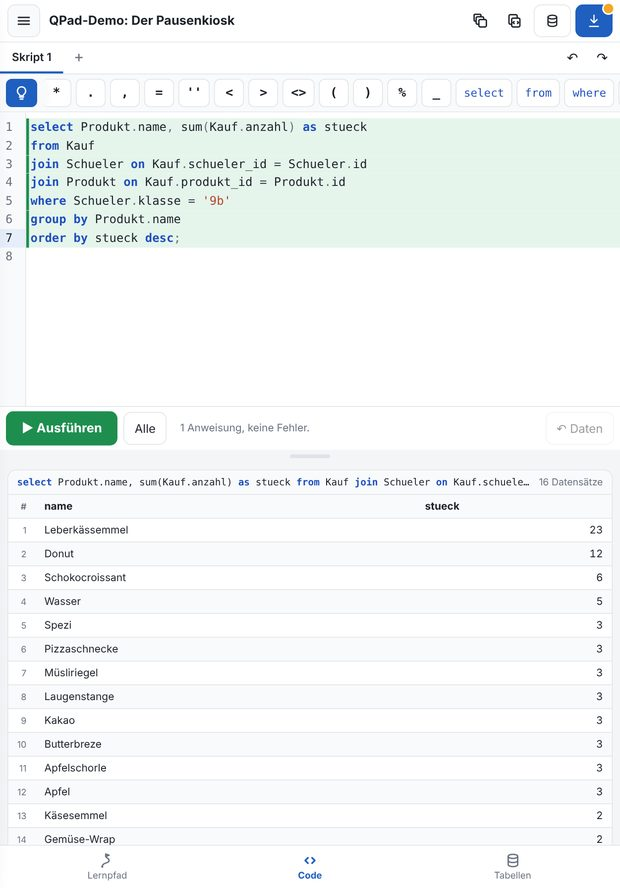
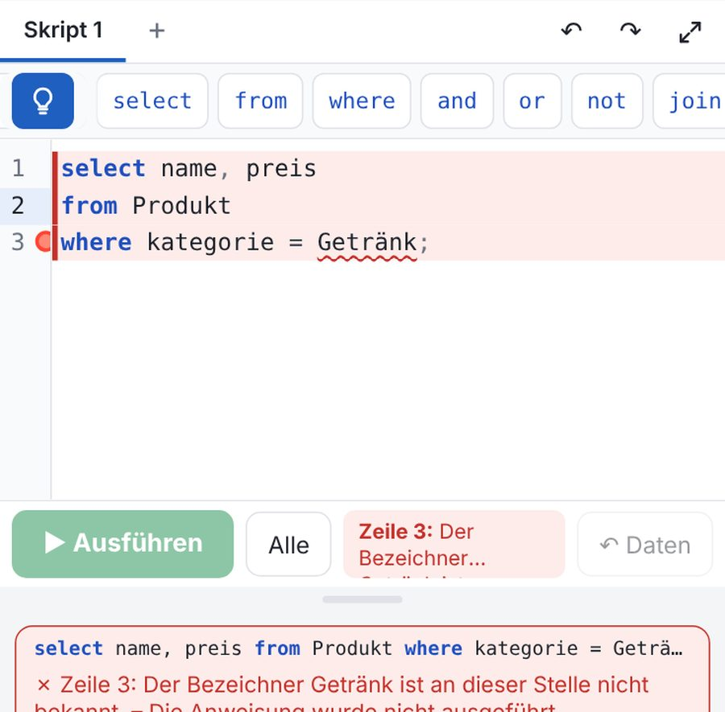

Das ist QPad
QPad ist eine Werkstatt für Datenbanken, gebaut für das iPad. Du schreibst SQL-Anweisungen, führst sie aus und siehst sofort das Ergebnis. Alles bleibt auf deinem Gerät, eine Anmeldung brauchst du nicht. Tippe auf die Nummern im Bild:

Tippe auf eine Nummer.
Ganz links in der Symbolleiste über dem Editor sitzt eine blaue Glühbirne. Sie erinnert dich an den wichtigsten Trick in QPad:
Weißt du nicht, was ein Knopf der Symbolleiste tut? Lege eine halbe Sekunde lang den Finger darauf.
Dann erscheint eine Kurzhilfe mit zwei Beispielen, und der Knopf wird nicht ausgelöst. Mit Einfügen übernimmst du ein Beispiel direkt in den Editor.

Quer stehen Tabellen, Editor und Lernpfad nebeneinander. Das ist ideal mit einer echten Tastatur. Hochkant zeigt QPad immer nur eine Ansicht; unten wechselst du zwischen Lernpfad, Code und Tabellen. Ohne Tastatur ist hochkant besser, weil die Bildschirmtastatur dann weniger verdeckt.

a) Tippe in QPad auf die Glühbirne. Was steht in dem Hinweis?
b) Lege den Finger eine halbe Sekunde auf den Knopf where in der Symbolleiste. Was erklärt dir QPad?
Lösung anzeigen
where legst du eine Bedingung fest, nur passende Datensätze kommen ins Ergebnis. Tippe auf das ✕ oder daneben, um sie zu schließen.Drei Tabellen für einen Kiosk
Die Datenbank des Pausenkiosks besteht aus drei Tabellen. Jede Zeile einer Tabelle ist ein Datensatz, zum Beispiel ein Schüler oder ein Einkauf. Jede Spalte ist ein Attribut mit einem festen Datentyp.
- id integer
- vorname varchar(30)
- nachname varchar(30)
- klasse varchar(3)
- guthaben decimal(5,2)
- id integer
- schueler_id integer→ Schueler.id
- produkt_id integer→ Produkt.id
- datum date
- pause integer
- anzahl integer
- id integer
- name varchar(40)
- kategorie varchar(20)
- preis decimal(4,2)
- kalorien integer
- vegan boolean
🔑 = Primärschlüssel · → = Fremdschlüssel (verweist auf einen Datensatz einer anderen Tabelle)
Jeder Datensatz hat eine eindeutige Nummer, den Primärschlüssel id. In der Tabelle Kauf steht deshalb nicht „Lena kauft eine Apfelschorle“, sondern nur zwei Nummern: schueler_id und produkt_id. Solche Verweise heißen Fremdschlüssel. So muss jeder Name und jeder Preis nur ein einziges Mal gespeichert werden.
Die Tabellen in QPad ansehen
- Quer siehst du die Tabellen links. Fehlen sie, tippe oben auf Tabellen. Hochkant tippst du unten auf den Reiter Tabellen.
- Tippe auf den Namen
Produkt. Die Tabelle klappt auf und zeigt ihre Spalten mit Datentyp. - Tippe bei
Produktauf Inhalt. Unter dem Editor erscheinen alle 16 Produkte.
Ist eine Tabelle aufgeklappt, fügt ein Tipp auf einen Spaltennamen diesen direkt in den Editor ein. Das spart Tipparbeit und Tippfehler.
Welcher Datentyp passt zu welcher Spalte? Tippe auf die Antwort, die du für richtig hältst:
Deine erste Abfrage
Eine Frage an die Datenbank heißt Abfrage. Sie beginnt mit select. Dahinter steht, welche Spalten du sehen willst, und nach from, aus welcher Tabelle. Der Stern * bedeutet „alle Spalten“.
- Tippe oben am Code auf In QPad einfügen. Die Anweisung landet am Ende deines Skripts, der Cursor steht schon darin. Du kannst sie natürlich auch selbst tippen.
- Die Anweisung, in der der Cursor steht, ist grün markiert. Genau sie wird ausgeführt.
- Tippe auf ▶ Ausführen. Unter dem Editor erscheint das Ergebnis als Tabelle.
| id | name | kategorie | preis | kalorien | vegan |
|---|---|---|---|---|---|
| 1 | Butterbreze | Gebäck | 1.2 | 280 | false |
| 2 | Laugenstange | Gebäck | 0.9 | 230 | true |
| 3 | Leberkässemmel | Warm | 2.8 | 520 | false |
| … 13 weitere | |||||
Sobald du from und ein Leerzeichen geschrieben hast, öffnet QPad eine Liste mit allen Tabellen: Kauf, Produkt und Schueler. Tippe einfach auf die richtige. Tabellennamen beginnen in dieser Datenbank mit einem Großbuchstaben, Spaltennamen klein.
Meist willst du aber nicht alles sehen. Dann zählst du die Spalten auf, durch Komma getrennt:
Jede Anweisung endet mit einem Strichpunkt ;. Vergisst du ihn, ergänzt QPad ihn nach kurzer Zeit selbst. So kannst du viele Anweisungen untereinander in ein Skript schreiben und jede einzeln ausführen.
Lass dir Vorname, Nachname und Klasse aller Schüler/innen anzeigen. Wie viele Datensätze sind es?
Lösung anzeigen
Es sind 24 Datensätze: je acht aus der 9a, 9b und 9c.
Nur was ins Budget passt
Du hast 1,50 € dabei. Welche Produkte kannst du dir leisten? Mit where legst du eine Bedingung fest. Nur Datensätze, für die sie stimmt, kommen ins Ergebnis. Tippe auf die Teile der Anweisung:
Tippe auf einen Teil der Anweisung.
Für Bedingungen gibt es diese Vergleiche: = gleich, <> ungleich, <, >, <= und >=. Mehrere Bedingungen verbindest du mit and (beide müssen stimmen) oder or (eine reicht).
- Text steht in einfachen Anführungszeichen:
kategorie = 'Getränk'. Die Taste '|' in der Symbolleiste setzt beide auf einmal. - Kommazahlen schreibst du mit Punkt:
1.5, nicht1,5. Das Komma trennt in SQL die Spalten. veganist ein Wahrheitswert:vegan = trueodervegan = false.
a) Welche Getränke kosten weniger als 1,30 €?
Lösung anzeigen
Wasser (0,80 €) und Apfelschorle (1,20 €). Eistee kostet genau 1,30 € und ist deshalb nicht dabei.
b) Welche Schüler/innen der 9c haben weniger als 2 € Guthaben auf ihrer Kioskkarte?
Lösung anzeigen
Anna, Finn und Moritz, alle mit 1,20 €.
Die Kalorien-Hitliste
Mit order by sortierst du das Ergebnis, mit desc absteigend (das Größte zuerst). limit 3 zeigt nur die ersten drei Datensätze. So entsteht eine Hitliste:
| name | kalorien |
|---|---|
| Leberkässemmel | 520 |
| Gemüse-Wrap | 410 |
| Käsesemmel | 390 |
Ohne desc sortiert QPad aufsteigend, Text nach dem Alphabet. Die Reihenfolge der Teile ist fest: select … from … where … order by … limit …
Suchen mit like
Weißt du nur den Anfang eines Namens, hilft like. Das Prozentzeichen % steht für „beliebig viele Zeichen“:
a) Welche drei Produkte sind am billigsten?
Lösung anzeigen
Apfel (0,50 €), Banane (0,60 €) und Wasser (0,80 €).
b) Welche Produkte enthalten „semmel“ im Namen?
Lösung anzeigen
Leberkässemmel und Käsesemmel. Das % vorne erlaubt beliebige Zeichen vor „semmel“.
Zählen und rechnen
SQL kann nicht nur Datensätze zeigen, sondern auch über viele Datensätze rechnen. Diese Aggregatfunktionen liefern einen einzigen Wert:
count(*)Anzahl der Datensätzesum(anzahl)Summe einer Spalteavg(preis)Durchschnittmin(preis) / max(preis)kleinster / größter WertMit group by rechnest du für jede Gruppe einzeln, zum Beispiel für jede Kategorie:
| kategorie | anzahl | durchschnittspreis |
|---|---|---|
| Belegt | 2 | 2.7 |
| Gebäck | 2 | 1.05 |
| Getränk | 5 | 1.24 |
| … Obst, Süßes, Warm | ||
count(*) as anzahl gibt der berechneten Spalte im Ergebnis einen lesbaren Namen. round(…, 2) rundet auf zwei Nachkommastellen, sonst stünde dort zum Beispiel 1.2666666666666666.
a) Wie viele Einkäufe gab es in der 2. Pause?
Lösung anzeigen
74 Einkäufe. In der 1. Pause waren es 118, da haben offenbar mehr Leute Hunger.
b) An welchem Tag war am Kiosk am meisten los?
Lösung anzeigen
Am Freitag, 23. Oktober 2026, mit 24 Einkäufen. Der Trick: nach dem Datum gruppieren, absteigend nach der Anzahl sortieren und nur den ersten Datensatz nehmen.
Wer hat was gekauft?
In der Tabelle Kauf stehen nur Nummern. Um Namen zu sehen, verbindest du sie mit den Tabellen Schueler und Produkt. Zu jedem Einkauf sucht join den Datensatz, dessen id zum Fremdschlüssel passt:
- Hinter
joinsteht die zweite Tabelle, hinterondie Bedingung, welche Datensätze zusammengehören. - Kommen Spaltennamen in mehreren Tabellen vor (wie
id), schreibst du den Tabellennamen davor:Schueler.id. - Füge die Anweisung ein und führe sie aus. Was hat Lena am 12. Oktober gekauft?
Lösung anzeigen
a) Was ist der Renner der 9b? Zähle, wie oft jedes Produkt von Schüler/innen der 9b gekauft wurde.
Lösung anzeigen
Ganz klar die Leberkässemmel: 23 Stück in zwei Wochen.
b) Wer hat insgesamt am meisten Geld am Kiosk ausgegeben? Tipp: Der Betrag eines Einkaufs ist anzahl * preis.
Lösung anzeigen
Ben aus der 9b mit 26,50 €. Kein Wunder, dass auf seiner Kioskkarte nur noch 0,50 € sind.
Daten ändern ohne Angst
Bens Eltern laden seine Kioskkarte mit 5 € auf. Mit update änderst du Datensätze, mit set legst du den neuen Wert fest:
Ohne where ändert update alle Datensätze. Dann hätte die ganze Schule 5 € mehr. QPad meldet nach dem Ausführen, wie viele Datensätze geändert wurden: Hier sollte es genau einer sein.
Ein neues Produkt kommt mit insert into in die Tabelle:
Etwas schiefgegangen?
Der Knopf rechts neben Ausführen nimmt die letzte Änderung an den Daten zurück, auch mehrmals hintereinander.
Im Menü ☰ stellt Datenbank zurücksetzen den Pausenkiosk wieder her wie am Anfang. Deine Skripte bleiben erhalten.
Und wenn eine Anweisung einen Fehler hat? Dann markiert QPad sie rot, unterringelt die Fehlerstelle und erklärt das Problem unter dem Editor. Ausgeführt wird sie nicht. Füge diese Anweisung ein und finde den Fehler:
Lösung anzeigen

Bei Getränk fehlen die Anführungszeichen. Ohne sie hält QPad das Wort für den Namen einer Spalte, und eine Spalte „Getränk“ gibt es nicht. Richtig ist where kategorie = 'Getränk';
Fehlt in select name preis from Produkt; das Komma, meldet QPad keinen Fehler. SQL versteht dann „zeige name und nenne die Spalte preis“. Das Ergebnis hat nur eine Spalte mit der falschen Überschrift. Schau dir deshalb immer auch das Ergebnis an.
Deinen Code kopieren, zum Beispiel für eine Abgabe
Oft sollst du deine Anweisungen auf einer Lernplattform abgeben, etwa in mebis. Dafür hat QPad oben in der Kopfzeile zwei Kopier-Knöpfe:
Kopiert alle Skripte (alle Reiter über dem Editor) auf einmal.
Kopiert nur das gerade geöffnete Skript.
Das Wichtigste in vier Fragen
Herunterladen oben rechts speichert dein Projekt als Datei, mit Skripten, Datenbank und diesem Lernpfad. Ein Punkt am Knopf zeigt, dass es noch ungesicherte Änderungen gibt. Nächste Stunde öffnest du die Datei wieder über ☰ → Projekt aus Datei öffnen. QPad speichert sonst nur hier im Browser.